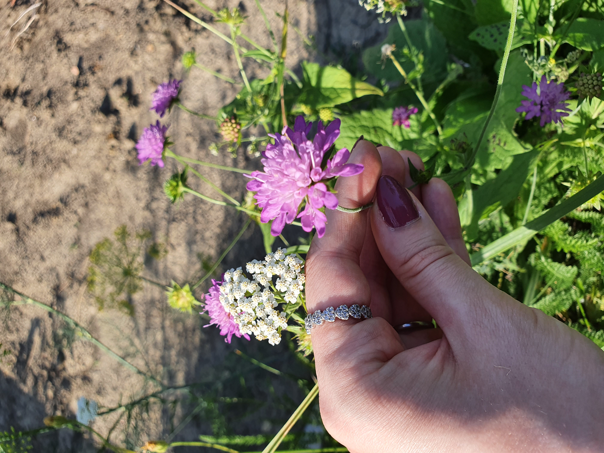

Rólam
Sziasztok!Gáspár Karolina vagyok a BME ipari termék- és formatervező szakos hallgatója. Szabadidőmben szívesen kézműveskedek, szeretek rajzolni, gyurmázni, régebben tűnemezeltem is, de a random barkácsolgatást is kedvelem, igaz sokszor nem lesz belőle semmi, de a munkafolyamatot nagyon élvezem. Ha érdekel miket készítettem, a Galéria fülre klikkelve találhatsz pár fotót is. Illetve van egy macskánk, Mira. Róla szintén készültek képek, szóval, ha az nem is érdekel miket csináltam, vannak macskás képeim...